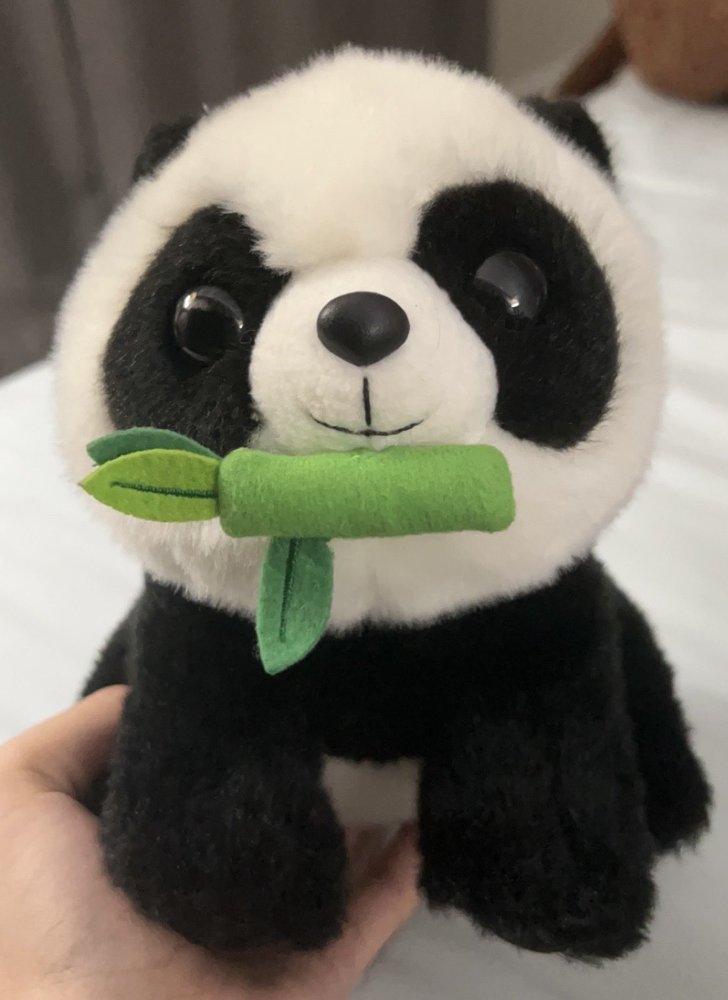

Hi, my name is
Chris Gade.
I'm a passionate Researcher interested in Cosmology, Computation, and Data Science
>>> def my_identity():
... return {
... "language" : "Python",
... "companion" : "Dr. Bubbles",
... "fuel" : "Strawberry Matcha Boba"
... }
01. About Me
Hello! I'm Satyajit, or Chris, a New-Grad student from Rutgers University--New Brunswick with a B.S. in Astrophysics and minor in Mathematics. My previous research was on the application of Machine Learning in Gravitational Lens Modeling. I also have a panda plush named "Dr. Bubbles" who serves as a motivator for me.
Here are a few technologies I've been working with recently:
- Python
- NumPy/SciPy
- AstroPy
- Pandas
- Matplotlib
- Keras
- SQL

02. Featured Projects

03. What's Next?
Get In Touch
I'm currently looking for research opportunities and collaborations in computational astrophysics. Whether you have a question or just want to share boba recommendations, I'll do my best to get back to you!
Say Hello